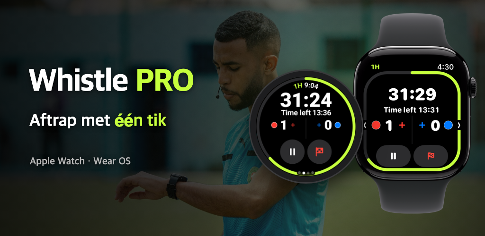

Whistle PRO
Horloge om en het veld op.
Wedstrijdtimer en notitieboek voor Apple Watch en Wear OS, gemaakt voor voetbalscheidsrechters.

Horloge om en het veld op.
Wedstrijdtimer en notitieboek voor Apple Watch en Wear OS, gemaakt voor voetbalscheidsrechters.

Amateurvoetbal, clubs, jeugdcompetities. De hele wedstrijd draait op één horloge, zonder telefoon.
Pauzeren en hervatten, een doelpunt of ongedaan maken met de knoppen, crown of bezel terwijl je loopt (PRO). Op Apple Watch en Wear OS-horloges zoals Galaxy Watch.
Helften, kwarten, verlenging en strafschoppen. Onderbrekingen worden apart getimed, zodat je een voorstel voor extra tijd krijgt.
Je pols trilt vlak voor het einde, aan het einde van de rust en wanneer een speler met een tijdstraf terug mag.
Registreer doelpunten, waarschuwingen, veldverwijderingen en wissels met team en rugnummer. Een tweede waarschuwing wordt automatisch een veldverwijdering.
Begin bij de FIFA-standaard, pas speelduur, aantal spelers, wissellimiet en tijdstraffen aan en sla alles op als sjabloon.
Hartslag, afstand, sprints en bewegingsheatmap worden bij de wedstrijd bewaard en als training opgeslagen in de Gezondheid-app (iPhone) of Health Connect (Android).
Na de wedstrijd deel je direct vanaf je telefoon een rapport met doelpunten, kaarten, wissels en de toegepaste regels.
Lijn in het tabblad [Kaart] van de wedstrijddetails de vier hoeken van het veld uit om je bewegingsheatmap op een satellietfoto te zien.
Van wedstrijden met een uitgelijnd veld maak je een replayvideo van 15 seconden van je bewegingen en die deel je meteen op social media.
Kies vóór de aftrap op je horloge de shirtkleuren van beide teams en pas ze na de wedstrijd aan op je telefoon.
Wat je nodig hebt om een wedstrijd te leiden is gratis; registreren en analyseren doe je met PRO.
Zonder abonnement
Maandelijks of jaarlijks · 7 dagen gratis proefperiode
Je neemt een abonnement in de telefoonapp en zegt het op elk moment op in de instellingen van je App Store- of Google Play-account.
Geen account, geen server. Wedstrijdgegevens en gezondheidsgegevens gaan alleen tussen je horloge en je telefoon.
Lees het privacybeleid